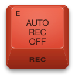

BVE-9100 Emulator
The Sony BVE-9100, emulated in full and running in your browser.

The Sony BVE-9100, emulated in full and running in your browser.
The real BVE-9100 system software, booted from its own floppies.
Setup, EDL and palette are kept in this browser between visits.
Virtual VTRs and a switcher on the RS-422 ports, ready to edit.